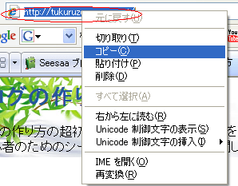
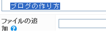
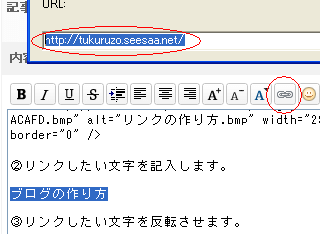
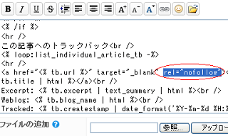

リンクタグの作り方
ブログを作成していると、ほかのサイトや自サイト内の別のページにリンクすることが頻繁にありますので、リンクタグの作り方は覚えておいた方が便利です。
例えば、あなたのブログから当サイトへリンクする方法はこんな感じです。
ブログでのリンクタグの作り方まず、リンク先のページを表示して、ＵＲＬの部分を左クリックして青色に反転させ、さらに右クリックで「コピー」を選択します。

これで、パソコン内に、リンク先のＵＲＬがコピーされました。
次に、ブログの記事の編集画面へと戻り、リンクする際に表示する文字列を記入します。（例：「こちらのサイト」など。）
ここでは、「ブログの作り方」と記入します。次に、記入したリンクの文字列を選択して反転させます。

左クリックを押しながら、文字をなぞると選択されます。
その状態で、リンクマークをクリックします。
たいていは鎖の絵文字になっていることが多いです。
出てきた窓に、右クリックで「貼り付け - OK」を押し、先ほどコピーしたリンク先のＵＲＬをはりつけて完成です！
これで、あなたのブログからわたしのブログへのリンクタグができあがりました！
実際のhtmlタグはこのような感じになります。
<a href="https://blog-tips.net/" target="_blank">ブログの作り方</a>
動画も作成したんでみてみてください。
html 上に、直接上のタグを記入しても表示されます。
<a href="リンク先のアドレス" target="_blank">リンクする文字列</a>
ちなみに、リンクタグのなかに、target="_blank" というのが入っていたりしますが、これは、リンクをクリックした際に、新規のウィンドウが立ち上がって別窓で開くという意味です。
通常は同じウィンドウで開く方がいいと思うので、target="_blank" はあまり使わない方がいいかと思います。
また、rel="nofollow" というのもありますが、これをリンクタグのなかに埋め込んでおくと被リンク扱いや発リンク扱いにはならなくなります。
たとえば、ブログで被リンク目的のために、スパムサイトからのトラックバックなどがされるかと思いますが、そんなときも rel="nofollow" がついていれば安心です。
シーサーブログのトラックバックやコメント欄には、もともとついていたりします。

これは、スパムサイトへリンクしてしまうと、検索エンジンからの評価が下がってしまうからですが、自動的にトラックバックされたとしても、それを無効にする効果があります。
けれども、お互いに関連性のあるブログで相互リンクするのはいいことなので、そういう時は rel="nofollow" をつけないでリンクするといいと思います。
- リンクタグのＨＴＭＬ
シーサーブログで使うタグのＨＴＭＬについてメモしておこうと思います。まず、リンクタグの&lt;a hrefについてあれこれしようと思います。 この&lt;a hrefの読み方ですが、... - ブログで rel=nofollow の使い方
ブログでもリンクタグの属性に rel="nofollow" を利用するといいとは思いますが、どのような時に使用すればいいのかという素朴な疑問がでてきてしまいます。 グーグルやヤフーでは rel="n...